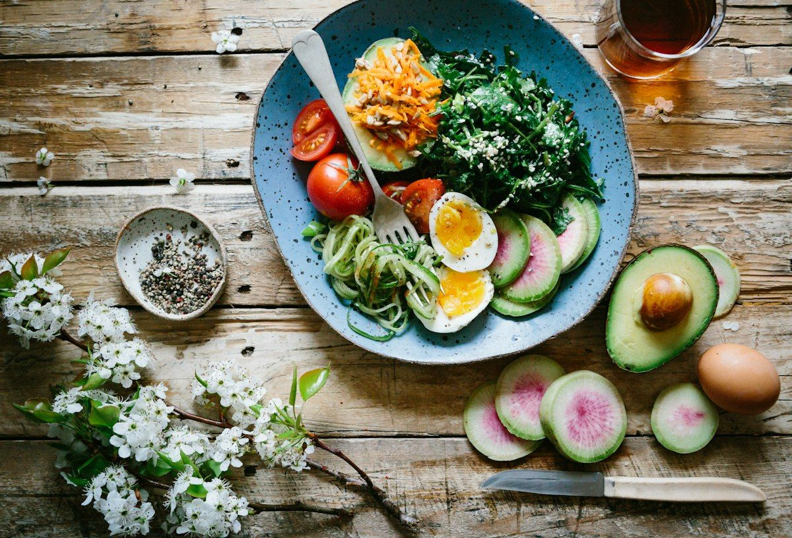

GRAMMAIRE · CONSEILS, CONSIGNES ET ORDRES
Vas-y ! Ne t'inquiète pas !L'impératif
Bonjour Penka !
Aujourd'hui, tu apprends l'impératif : pour donner un conseil, une instruction ou un ordre. Tu l'utilises tous les jours, à la maison (Dépêche-toi !) et au bureau (Veuillez patienter.). Après chaque règle, tu t'entraînes, puis tu parles beaucoup.
Today, you learn the imperative: to give advice, an instruction or an order. You use it every day, at home (Hurry up!) and at the office (Please wait.). After each rule, you practise, then you talk a lot.
Viens ! Prends ton manteau ! Dépêche-toi !
Come! Take your coat! Hurry up!
▶ Clique pour écouter. Répète la phrase à voix haute.
Click to listen. Repeat the sentence out loud.
EN : la traduction en anglais. Essaie d'abord sans !
The English translation. Try without it first!
🗣️ Dans « À toi de parler », les débuts de phrase t'aident. Clique dessus pour les écouter.
In “À toi de parler”, the sentence starters help you. Click them to listen.
★ Tes réponses restent enregistrées. À la fin, « À revoir » te montre les points à retravailler.
Your answers stay saved. At the end, “À revoir” shows you the points to work on again.
1
L'impératif : à quoi ça sert ?
The imperative: what is it for?
À quoi sert l'impératif ?
What is the imperative for?
On utilise l'impératif pour donner une instruction, un conseil ou un ordre.
We use the imperative to give an instruction, a piece of advice or an order.
🧭 Une instruction
Tournez à droite après la banque.
Turn right after the bank.
💡 Un conseil
Bois de l'eau, il fait chaud !
Drink some water, it's hot!
❗ Un ordre
Range ta chambre, s'il te plaît !
Tidy your room, please!
Comment former l'impératif ?
How to form the imperative
C'est le présent sans sujet. Il existe seulement pour tu, nous et vous.
It's the present tense without the subject. It only exists for tu, nous and vous.
| verbe au présent | tu | nous | vous |
|---|---|---|---|
| partir tu pars · nous partons · vous partez | Pars ! | Partons ! | Partez ! |
| finir tu finis · nous finissons · vous finissez | Finis ! | Finissons ! | Finissez ! |
| prendre tu prends · nous prenons · vous prenez | Prends ! | Prenons ! | Prenez ! |
| faire tu fais · nous faisons · vous faites | Fais ! | Faisons ! | Faites ! |
👥 nous = une proposition
Partons ! Il est tard.
Let's go! It's late.
Faisons une pause.
Let's take a break.
🎩 vous = plusieurs personnes ou politesse
Les enfants, finissez vos devoirs !
Children, finish your homework!
Prenez un café, Madame.
Have a coffee, madam.
➖ La négation
ne + verbe + pas
“ne” + verb + “pas”
Ne pars pas sans moi !
Don't leave without me!
Ne faites pas de bruit.
Don't make any noise.
1
FORMER L'IMPÉRATIF
Penka, choisis ou écris le verbe à l'impératif.
Penka, choose or write the verb in the imperative.
1
Il fait froid, Luka. ______ ton manteau !
It's cold, Luka. Take your coat!
✓ Il fait froid, Luka. Prends ton manteau !
2
(À tes deux enfants) ______ vos devoirs avant le dîner !
(To your two children) Finish your homework before dinner!
✓ Finissez vos devoirs avant le dîner !
3
Il est midi. ______ manger ensemble !
It's noon. Let's go and eat together!
✓ Il est midi. Allons manger ensemble !
4
Tu es fatiguée ? (dormir) un peu !
Are you tired? Sleep a little!
✓ Tu es fatiguée ? Dors un peu !
5
(Au chauffeur de taxi) (attendre) ici, s'il vous plaît.
(To the taxi driver) Wait here, please.
✓ Attendez ici, s'il vous plaît.
6
Ne (partir) pas sans moi !
Don't leave without me!
✓ Ne pars pas sans moi !
🗣️ À toi de parler !
Réponds à voix haute avec une phrase complète. Les débuts de phrase t'aident : clique pour les écouter. Puis compare avec l'exemple.
Answer out loud with a full sentence. The sentence starters help you: click to listen. Then compare with the example.
1
Ton amie est stressée par le travail. Donne-lui deux conseils.
Your friend is stressed by work. Give her two pieces of advice.
Pour t'aider :
Exemple de réponse
Prends quelques jours de vacances et fais du sport le soir !
Take a few days off and do some sport in the evening!
2
Un nouveau collègue arrive au Luxembourg. Donne-lui des conseils avec « vous ».
A new colleague arrives in Luxembourg. Give him advice using “vous”.
Pour t'aider :
Exemple de réponse
Prenez le bus : c'est gratuit ! Visitez la vieille ville et apprenez quelques mots de luxembourgeois.
Take the bus: it's free! Visit the old town and learn a few words of Luxembourgish.
3
Propose un programme pour samedi à ta famille, avec « nous ».
Suggest a plan for Saturday to your family, using “nous”.
Pour t'aider :
Exemple de réponse
Allons au parc le matin, puis mangeons au restaurant. Le soir, regardons un film ensemble !
Let's go to the park in the morning, then eat at a restaurant. In the evening, let's watch a film together!
2
Regarde ! Va ! Vas-y !
Regarde! Va! Vas-y!
Regarde ! Va ! : pas de « s »
Regarde! Va!: no “s”
Avec tu, les verbes en -er et le verbe aller perdent le s.
With tu, -er verbs and the verb aller lose the s.
tu regardes→Regarde !
tu manges→Mange !
tu écoutes→Écoute !
tu vas→Va !
Écoute bien la question.
Listen carefully to the question.
Va dormir, il est tard !
Go to sleep, it's late!
📌 Pareil pour ouvrir, offrir
Ouvre la fenêtre, il fait chaud.
Open the window, it's hot.
Offre des fleurs à ta grand-mère !
Give your grandmother some flowers!
🔊 Mais devant « en » et « y », on garde le « s »
On entend [z] : vas-y [vazi], manges-en [mɑ̃ʒzɑ̃].
You hear a [z] sound: vas-y, manges-en.
Vas-y, tu vas réussir !
Go on, you will succeed!
Il y a du gâteau : manges-en !
There's some cake: have some!
Le dossier pour demain ? Penses-y !
The file for tomorrow? Think about it!
2
PAS DE « S »… SAUF DEVANT EN ET Y
Penka, choisis ou écris la bonne forme.
Penka, choose or write the correct form.
1
Luka, ______ ta chambre, s'il te plaît !
Luka, tidy your room, please!
✓ Luka, range ta chambre, s'il te plaît !
2
______ à la boulangerie, on n'a plus de pain !
Go to the bakery, we haven't got any bread left!
✓ Va à la boulangerie, on n'a plus de pain !
3
Le feu est vert, ______ !
The light is green, go!
✓ Le feu est vert, vas-y !
4
Tu n'as pas compris ? (écouter) encore une fois !
You didn't understand? Listen once more!
✓ Écoute encore une fois !
5
Il reste de la salade : (manger + en) un peu !
There's some salad left: have a little!
✓ Il reste de la salade : manges-en un peu !
6
(À Luka) ______ la fenêtre, il fait chaud !
(To Luka) Open the window, it's hot!
✓ Ouvre la fenêtre, il fait chaud !
🗣️ À toi de parler !
Réponds à voix haute avec une phrase complète. Les débuts de phrase t'aident : clique pour les écouter. Puis compare avec l'exemple.
Answer out loud with a full sentence. The sentence starters help you: click to listen. Then compare with the example.
1
Luka est en retard pour l'école. Qu'est-ce que tu lui dis ?
Luka is late for school. What do you say to him?
Pour t'aider :
Exemple de réponse
Mange vite ton petit déjeuner, prends ton sac et va à l'arrêt de bus !
Eat your breakfast quickly, take your bag and go to the bus stop!
2
Ton amie n'ose pas parler français. Encourage-la.
Your friend doesn't dare to speak French. Encourage her.
Pour t'aider :
Exemple de réponse
Vas-y, parle ! Essaie, les gens sont gentils.
Go on, speak! Try, people are nice.
3
Explique ta recette préférée en trois étapes.
Explain your favourite recipe in three steps.
Pour t'aider :
Exemple de réponse
Coupe les tomates et le concombre, ajoute le fromage, puis mélange bien. Voilà la salade chopska !
Cut the tomatoes and the cucumber, add the cheese, then mix well. There's the shopska salad!
3
Sois, aie, sache, veuillez
Sois, aie, sache, veuillez: irregular verbs
Sois, aie, sache, veuillez
The irregular verbs
Être, avoir, savoir et vouloir ont un impératif irrégulier.
Être, avoir, savoir and vouloir have an irregular imperative.
| verbe | tu | nous | vous |
|---|---|---|---|
| être | sois | soyons | soyez |
| avoir | aie | ayons | ayez |
| savoir | sache | sachons | sachez |
| vouloir | — | — | veuillez |
Sois prudente sur la route !
Be careful on the road!
Soyez à l'heure demain matin.
Be on time tomorrow morning.
Aie confiance en toi !
Have confidence in yourself!
N'ayez pas peur, tout va bien.
Don't be afraid, everything is fine.
Sachez que le bureau est fermé lundi.
Please note that the office is closed on Monday.
Veuillez signer ici, s'il vous plaît.
Please sign here.
💼 Veuillez = très poli
On l'utilise au travail, au téléphone, dans les lettres et les e-mails.
We use it at work, on the phone, in letters and emails.
Veuillez trouver ci-joint les documents.
Please find attached the documents.
Veuillez patienter quelques minutes.
Please wait a few minutes.
3
LES IRRÉGULIERS
Penka, choisis ou écris la bonne forme.
Penka, choose or write the correct form.
1
Luka, ______ sage à l'école !
Luka, be good at school!
✓ Luka, sois sage à l'école !
2
______ patience, Monsieur, le dossier arrive demain.
Be patient, sir, the file arrives tomorrow.
✓ Ayez patience, Monsieur, le dossier arrive demain.
3
______ trouver ci-joint les documents.
Please find attached the documents.
✓ Veuillez trouver ci-joint les documents.
4
(être, vous) à l'heure demain matin !
Be on time tomorrow morning!
✓ Soyez à l'heure demain matin !
5
(ne pas avoir, tu) pas peur, tout va bien !
Don't be afraid, everything is fine!
✓ N'aie pas peur, tout va bien !
6
(nous) ______ prudents, la route est glissante.
Let's be careful, the road is slippery.
✓ Soyons prudents, la route est glissante.
🗣️ À toi de parler !
Réponds à voix haute avec une phrase complète. Les débuts de phrase t'aident : clique pour les écouter. Puis compare avec l'exemple.
Answer out loud with a full sentence. The sentence starters help you: click to listen. Then compare with the example.
1
Un client appelle le bureau. Il doit attendre. Qu'est-ce que tu dis ?
A client calls the office. He has to wait. What do you say?
Pour t'aider :
Exemple de réponse
Bonjour Monsieur, veuillez patienter un instant, ne quittez pas.
Hello sir, please wait a moment, hold the line.
2
Tu termines un e-mail avec des documents.
You finish an email with some documents.
Pour t'aider :
Exemple de réponse
Veuillez trouver ci-joint les documents. N'hésitez pas à me contacter. Bien cordialement, Penka.
Please find attached the documents. Don't hesitate to contact me. Kind regards, Penka.
3
Ton fils a un examen demain. Rassure-le.
Your son has an exam tomorrow. Reassure him.
Pour t'aider :
Exemple de réponse
Sois tranquille, tu as bien travaillé. Aie confiance en toi !
Don't worry, you have worked well. Have confidence in yourself!
4
Écoute-le ! Téléphone-moi !
Pronouns after the verb
Écoute-le ! Téléphone-moi !
Pronouns in the affirmative
À la forme affirmative, le pronom se place après le verbe, avec un trait d'union (-).
In the affirmative, the pronoun goes after the verb, with a hyphen (-).
verbe-le · la · les · lui · leur · en · y
Ce livre ? Lis-le !
This book? Read it!
Ta mère ? Appelle-la ce soir !
Your mother? Call her tonight!
Ton chef ? Réponds-lui vite.
Your boss? Answer him quickly.
Tes parents ? Écris-leur une carte.
Your parents? Write them a card.
Des pommes ? Prends-en deux !
Apples? Take two!
Le marché ? Allons-y !
The market? Let's go!
⭐ me → moi, te → toi
Après le verbe, me devient moi et te devient toi.
After the verb, me becomes moi and te becomes toi.
Téléphone-moi demain.
Phone me tomorrow.
Aide-moi, s'il te plaît !
Help me, please!
🛏️ Les verbes pronominaux
tu
Lève-toi !
Get up!
nous
Levons-nous !
Let's get up!
vous
Levez-vous !
Get up!
Dépêche-toi, le bus arrive !
Hurry up, the bus is coming!
Asseyez-vous, je vous en prie.
Please sit down.
4
LE PRONOM APRÈS LE VERBE
Penka, choisis, écris ou remets les mots dans l'ordre.
Penka, choose, write or put the words in order.
1
Ton médicament ? ______ après le repas !
Your medicine? Take it after the meal!
✓ Ton médicament ? Prends-le après le repas !
2
Tes amis attendent ta réponse : ______ ce soir !
Your friends are waiting for your answer: write to them tonight!
✓ Tes amis attendent ta réponse : écris-leur ce soir !
3
J'ai une question. ______, s'il te plaît !
I have a question. Help me, please!
✓ J'ai une question. Aide-moi, s'il te plaît !
4
Il est sept heures, Luka ! (se lever) !
It's seven o'clock, Luka! Get up!
✓ Il est sept heures, Luka ! Lève-toi !
5
(s'asseoir, vous) , Madame, le notaire arrive.
Sit down, madam, the notary is coming.
✓ Asseyez-vous, Madame, le notaire arrive.
6
Remets les mots dans l'ordre.
Put the words in order. (Phone me at the office tomorrow morning.)
✓ Téléphone-moi au bureau demain matin.
🗣️ À toi de parler !
Réponds à voix haute avec une phrase complète. Les débuts de phrase t'aident : clique pour les écouter. Puis compare avec l'exemple.
Answer out loud with a full sentence. The sentence starters help you: click to listen. Then compare with the example.
1
Ton collègue a un problème avec un client. Donne-lui des conseils.
Your colleague has a problem with a client. Give him some advice.
Pour t'aider :
Exemple de réponse
Le client ? Appelle-le tout de suite et envoie-lui les documents. Si tu as un problème, demande-moi !
The client? Call him straight away and send him the documents. If you have a problem, ask me!
2
Le dimanche matin, toute la famille dort encore. Qu'est-ce que tu dis ?
On Sunday morning, the whole family is still asleep. What do you say?
Pour t'aider :
Exemple de réponse
Levez-vous, les enfants ! Habillez-vous, on va au marché. Allons-y !
Get up, children! Get dressed, we're going to the market. Let's go!
3
Ton amie part en vacances en Bulgarie. Donne-lui des conseils.
Your friend is going on holiday to Bulgaria. Give her some advice.
Pour t'aider :
Exemple de réponse
Visite Plovdiv, c'est magnifique ! Et le fromage bulgare ? Goûte-le ! Achètes-en pour moi !
Visit Plovdiv, it's beautiful! And the Bulgarian cheese? Taste it! Buy some for me!
5
Ne t'inquiète pas !
Don't worry!
Ne t'inquiète pas ! : la forme négative
Pronouns in the negative
À la forme négative, le pronom reste devant le verbe et ne change pas.
In the negative, the pronoun stays before the verb and does not change.
ne+pronom+verbe+pas
Téléphone-moi !→Ne me téléphone pas !
Lève-toi !→Ne te lève pas !
Prends-le !→Ne le prends pas !
Réponds-lui !→Ne lui réponds pas !
Vas-y !→N'y va pas !
Manges-en !→N'en mange pas !
💬 Des phrases très utiles
Ne t'inquiète pas !
Don't worry!
Ne vous inquiétez pas.
Don't worry (polite).
Ne quittez pas.
Hold the line.
N'oublie pas tes clés !
Don't forget your keys!
5
LA FORME NÉGATIVE
Penka, choisis, écris ou remets les mots dans l'ordre.
Penka, choose, write or put the words in order.
1
Ce n'est pas grave, ______ !
It's not serious, don't worry!
✓ Ce n'est pas grave, ne t'inquiète pas !
2
Le gâteau est pour demain : ______ !
The cake is for tomorrow: don't eat it!
✓ Le gâteau est pour demain : ne le mange pas !
3
Le parc ? Il pleut beaucoup : ______ !
The park? It's raining a lot: don't go there!
✓ Le parc ? Il pleut beaucoup : n'y va pas !
4
(Mets à la forme négative) Téléphone-moi ce soir ! → ce soir !
Don't phone me tonight!
✓ Ne me téléphone pas ce soir !
5
Tu es en vacances : (ne pas se réveiller) tôt !
You're on holiday: don't wake up early!
✓ Tu es en vacances : ne te réveille pas tôt !
6
Remets les mots dans l'ordre.
Put the words in order. (Don't worry, madam.)
✓ Ne vous inquiétez pas, Madame.
🗣️ À toi de parler !
Réponds à voix haute avec une phrase complète. Les débuts de phrase t'aident : clique pour les écouter. Puis compare avec l'exemple.
Answer out loud with a full sentence. The sentence starters help you: click to listen. Then compare with the example.
1
Ta collègue a oublié un document important. Rassure-la.
Your colleague forgot an important document. Reassure her.
Pour t'aider :
Exemple de réponse
Ne t'inquiète pas ! Je l'ai sur mon ordinateur, je te l'envoie.
Don't worry! I have it on my computer, I'll send it to you.
2
Luka veut jouer aux jeux vidéo avant ses devoirs. Qu'est-ce que tu dis ?
Luka wants to play video games before his homework. What do you say?
Pour t'aider :
Exemple de réponse
Ne joue pas maintenant ! Fais d'abord tes devoirs, et n'oublie pas ta dictée.
Don't play now! Do your homework first, and don't forget your dictation.
3
Un ami veut aller en voiture au centre-ville à huit heures. Conseille-le.
A friend wants to drive to the town centre at eight. Advise him.
Pour t'aider :
Exemple de réponse
N'y va pas en voiture, il y a trop de bouchons ! Prends le tram, c'est plus rapide.
Don't go there by car, there are too many traffic jams! Take the tram, it's quicker.

6
Une journée avec l'impératif
A day with the imperative
Écoute et lis le dialogue
Listen to and read the dialogue
C'est le matin chez Penka. Écoute chaque phrase et répète. Trouve tous les verbes à l'impératif !
It's morning at Penka's home. Listen to each sentence and repeat. Find all the verbs in the imperative!
Penka
Luka, réveille-toi ! Il est sept heures !
Luka, wake up! It's seven o'clock!
Luka
Encore cinq minutes, maman…
Five more minutes, mum…
Penka
Non, lève-toi tout de suite ! Et n'oublie pas ton cahier de français.
No, get up right now! And don't forget your French exercise book.
Luka
Il est où ? Je ne le trouve pas !
Where is it? I can't find it!
Penka
Cherche-le sur ton bureau. Et prends ton manteau, il fait froid.
Look for it on your desk. And take your coat, it's cold.
Luka
J'ai faim ! Il y a des croissants ?
I'm hungry! Are there any croissants?
Penka
Oui, prends-en un, mais mange vite !
Yes, take one, but eat quickly!
Luka
Ne t'inquiète pas, maman, j'ai le temps !
Don't worry, mum, I've got time!
Penka
Allez, vas-y ! Et sois sage !
Come on, off you go! And be good!
6
AU BUREAU AVEC CLARA
Penka, complète le dialogue avec ta nouvelle collègue.
Penka, complete the dialogue with your new colleague.
1
Clara : Je peux t'aider ?
Penka : Oui, (prendre) ces dossiers, s'il te plaît.
Penka : Oui, (prendre) ces dossiers, s'il te plaît.
Clara: Can I help you? Penka: Yes, take these files, please.
✓ Oui, prends ces dossiers, s'il te plaît.
2
Penka : (mettre + les) sur le bureau du chef.
Penka: Put them on the boss's desk.
✓ Mets-les sur le bureau du chef.
3
Clara : Et le client bulgare ?
Penka : (appeler + le) cet après-midi.
Penka : (appeler + le) cet après-midi.
Clara: And the Bulgarian client? Penka: Call him this afternoon.
✓ Appelle-le cet après-midi.
4
Penka : (ne pas s'inquiéter) : il parle bien français !
Penka: Don't worry: he speaks French well!
✓ Ne t'inquiète pas : il parle bien français !
5
Clara : On déjeune ensemble ?
Penka : Oui, (aller + y, nous) à midi !
Penka : Oui, (aller + y, nous) à midi !
Clara: Shall we have lunch together? Penka: Yes, let's go at noon!
✓ Oui, allons-y à midi !
6
Penka (à des clients) : ______ patienter quelques minutes, s'il vous plaît.
(To some clients) Please wait a few minutes.
✓ Veuillez patienter quelques minutes, s'il vous plaît.
7
Remets les mots dans l'ordre.
Put the words in order. (Don't worry, you will succeed!)
✓ Sois tranquille, tu vas réussir !
🗣️ À toi de parler !
(Indication donnée : Irène joue Luka.)
Irène plays Luka.
Réponds à Luka à voix haute. Utilise l'impératif dans chaque réponse.
Answer Luka out loud. Use the imperative in each answer.
1
Maman, je peux regarder la télé ?
Mum, can I watch TV?
Pour t'aider :
Exemple de réponse
Oui, mais fais d'abord tes devoirs. Et ne la regarde pas trop longtemps !
Yes, but do your homework first. And don't watch it for too long!
2
Je ne trouve pas mes chaussures !
I can't find my shoes!
Pour t'aider :
Exemple de réponse
Cherche-les dans l'entrée ! Regarde sous le banc.
Look for them in the hall! Look under the bench.
3
J'ai peur de l'examen de français.
I'm scared of the French exam.
Pour t'aider :
Exemple de réponse
Ne t'inquiète pas, tu as bien travaillé. Sois tranquille et aie confiance en toi !
Don't worry, you have worked well. Stay calm and have confidence in yourself!
4
Je peux inviter Max samedi ?
Can I invite Max on Saturday?
Pour t'aider :
Exemple de réponse
Oui, invite-le ! Dis-lui de venir à quatre heures.
Yes, invite him! Tell him to come at four.
★
Mes phrases utiles
My useful phrases
Écoute et répète ces phrases chaque jour. Tu peux les utiliser tout de suite !
Listen to and repeat these phrases every day. You can use them straight away!
Vas-y !
Go on!
Allons-y !
Let's go!
Ne t'inquiète pas !
Don't worry!
Dépêche-toi !
Hurry up!
Attends-moi !
Wait for me!
Téléphone-moi !
Phone me!
Sois prudent !
Be careful!
Aie confiance !
Have confidence!
Repose-toi bien !
Have a good rest!
N'oublie pas tes clés !
Don't forget your keys!
Ne quittez pas.
Hold the line.
Veuillez patienter, s'il vous plaît.
Please wait.
Veuillez trouver ci-joint les documents.
Please find attached the documents.
N'hésitez pas à me contacter.
Don't hesitate to contact me.
Asseyez-vous, je vous en prie.
Please sit down.
★
À revoir
To review
Clique sur le lien pour relire la règle, puis écoute la bonne phrase et répète-la.
Click the link to read the rule again, then listen to the correct sentence and repeat it.
Pas encore d'erreur. Les points à revoir apparaissent ici quand tu fais les exercices.
| Ex. | La bonne réponse | Ma réponse | La règle |
|---|